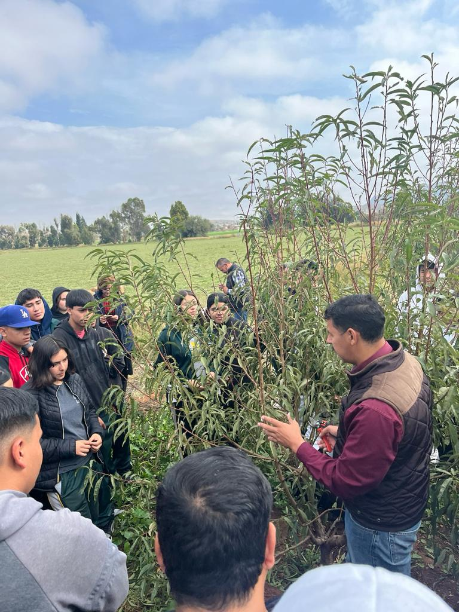

Un Taller de Captación de Agua Pluvial es una actividad educativa y práctica que tiene como objetivo enseñar a las personas cómo recolectar, almacenar y aprovechar el agua de lluvia de manera eficiente y segura. Este tipo de taller busca promover el uso sustentable del recurso hídrico, especialmente en zonas donde el acceso al agua es limitado o donde el uso agrícola requiere soluciones sostenibles.
El uso correcto de un sistema de captación de agua pluvial ayuda a fomentar prácticas sostenibles y eficientes, especialmente en comunidades rurales, escuelas agropecuarias como el CBTA 88, y hogares que buscan reducir su consumo de agua potable.

⬅ Volver